Bem-vindo
O karatê é muito mais do que uma arte marcial. Ao longo de sua história, tornou-se uma filosofia de vida baseada na disciplina, no respeito e no aperfeiçoamento constante. Neste site você conhecerá sua origem, sua chegada ao Brasil, os principais estilos, seus pilares fundamentais e os valores que fazem do karatê uma prática reconhecida em todo o mundo.
1. Origem do Karatê
O karatê teve sua origem no século XV na ilha de Okinawa , localizada ao sul do Japão e a leste da China. Na época, Okinawa fazia parte do Reino de Ryukyu e era um importante centro comercial, recebendo forte influência cultural chinesa. Esse intercâmbio foi decisivo para o desenvolvimento da arte marcial que mais tarde seria conhecida como karatê.
Durante o reinado de Shō Hashi, foi proibido o porte de armas no reino com o objetivo de evitar revoltas e manter a estabilidade política. Sem poder utilizar espadas ou outras armas, os habitantes passaram a aperfeiçoar técnicas de defesa pessoal utilizando apenas o próprio corpo. Essas técnicas receberam o nome de Te, que significa "mão".
Com o passar do tempo, surgiram três importantes variações do Te, desenvolvidas nas principais cidades do Reino de Ryukyu. Em Shuri nasceu o Shuri-te, caracterizado por movimentos rápidos, postura natural e técnicas lineares. Na cidade de Naha desenvolveu-se o Naha-te, marcado por golpes curtos, grande estabilidade e controle da respiração. Já em Tomari surgiu o Tomari-te, estilo conhecido pela agilidade, mobilidade e movimentos mais acrobáticos.
Além das técnicas locais, Okinawa recebeu grande influência das artes marciais chinesas devido ao intenso comércio entre os dois povos. Mestres chineses ensinaram diferentes estilos de kung fu, cujos princípios, golpes e posturas foram incorporados ao Te, contribuindo para sua evolução.
Em 1609, o Reino de Ryukyu foi invadido pelo clã japonês Satsuma. Embora mantivesse certa autonomia, Okinawa passou a sofrer forte influência da cultura japonesa. Enquanto o ju-jutsu era voltado para combates com armaduras, os praticantes do Te aperfeiçoavam socos, chutes e bloqueios, mais eficientes em combates sem armaduras. Os japoneses também influenciaram a disciplina, a ética e a forma de ensino da arte marcial.
No início do século XX, o mestre Anko Itosu desempenhou um papel fundamental na organização e difusão da arte. Ele desenvolveu métodos de ensino que permitiram a introdução do karatê nas escolas de Okinawa, defendendo que sua prática contribuía para a formação física, moral e disciplinar dos estudantes.
Nessa mesma época, a expressão Karatê-Do, que significa "Caminho das Mãos Vazias", passou a representar não apenas uma técnica de combate sem armas, mas também uma filosofia de vida baseada no respeito, na disciplina, na perseverança e no aperfeiçoamento constante do praticante.
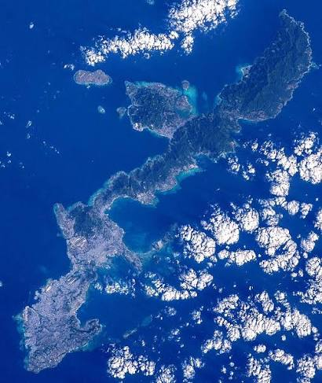
Curiosidade
Antes de receber o nome Karatê, essa arte marcial era conhecida como Tōde, expressão que significa "mãos chinesas", evidenciando a forte influência das artes marciais da China em sua formação.
Gichin Funakoshi
Gichin Funakoshi nasceu em Shuri, Okinawa, em 10 de novembro de 1868 e é reconhecido mundialmente como o pai do karatê moderno. Desde criança treinou sob a orientação dos mestres Anko Asato e Anko Itosu .
Em 1922, realizou uma demonstração de karatê em Tóquio que marcou o início da expansão da modalidade pelo Japão. Sua dedicação fez com que o karatê ultrapassasse as fronteiras japonesas e se tornasse uma das artes marciais mais praticadas do mundo.
Funakoshi defendia que o verdadeiro objetivo do karatê era formar pessoas melhores. Para ele, disciplina, respeito, humildade e autocontrole eram tão importantes quanto a técnica.
Sua frase mais conhecida, "Karate ni sente nashi", significa "No karatê não existe primeiro ataque", resumindo a filosofia pacífica da arte marcial.
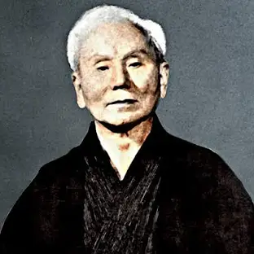
O Tigre Shotokan
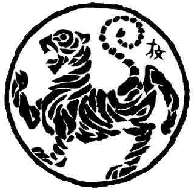
O Tigre Shotokan é um dos símbolos mais conhecidos do karatê e representa o estilo criado por Gichin Funakoshi. Seu desenho foi elaborado pelo artista japonês Hoan Kosugi , inspirado na filosofia do Zen e na busca pelo equilíbrio entre corpo, mente e espírito.
Na cultura oriental, o tigre simboliza força, coragem, sabedoria, determinação e autocontrole. Dentro do karatê, ele representa a busca constante pelo aperfeiçoamento físico, técnico e moral do praticante, refletindo os princípios fundamentais do Karatê-Do.
2. Os Estilos do Karatê
Com a evolução do karatê em Okinawa e sua posterior difusão pelo Japão, diferentes mestres desenvolveram métodos próprios de ensino, dando origem a diversos estilos. Embora todos compartilhem os princípios fundamentais do Karatê-Do, cada um apresenta características técnicas, filosóficas e estratégicas que os tornam únicos.
SHOTOKAN
Bases longas • Golpes lineares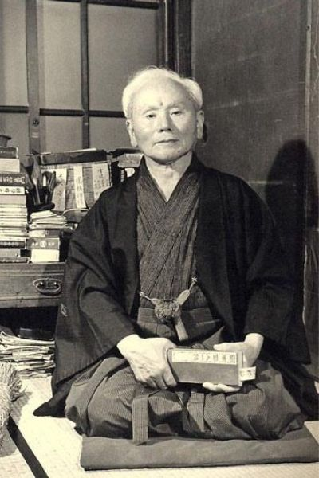
Fundador: Gichin Funakoshi
É o estilo mais praticado no mundo. Caracteriza-se por bases amplas, golpes fortes, movimentos lineares e grande ênfase na disciplina, na técnica e no aperfeiçoamento contínuo do praticante.
⚡ Velocidade 🎯 Precisão 🥋 Disciplina
GOJU-RYU
Força e suavidade em equilíbrio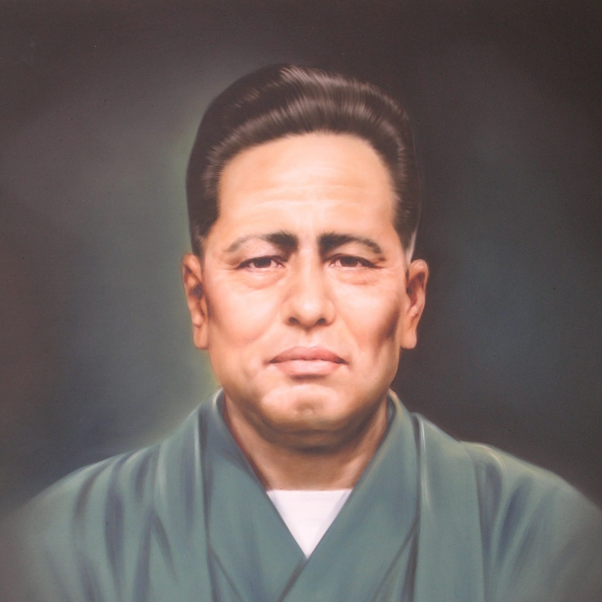
Fundador: Chojun Miyagi
Seu nome significa "estilo duro e suave". Combina golpes potentes com movimentos circulares, técnicas de respiração, estabilidade e defesa em curta distância.
💨 Respiração 🛡 Defesa 💪 Força
SHITO-RYU
Grande variedade de katas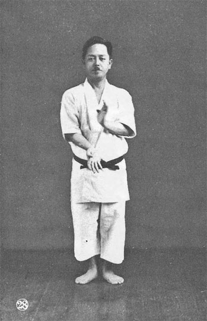
Fundador: Kenwa Mabuni
Desenvolvido a partir dos ensinamentos dos estilos Shuri-te e Naha-te, possui um dos maiores repertórios de katas do karatê tradicional, combinando velocidade e potência.
🥋 Katas ⚖ Equilíbrio 🔄 Versatilidade
WADO-RYU
Esquiva e harmonia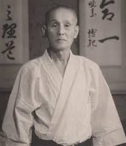
Fundador: Hironori Otsuka
Combina técnicas do karatê com princípios do ju-jutsu, valorizando a esquiva, a fluidez dos movimentos e o uso inteligente da força do adversário.
🌀 Esquiva 🤝 Harmonia ⚔ Eficiência
3. O Karatê no Brasil
O karatê chegou ao Brasil no século XX, a partir de 1908, com a chegada dos primeiros imigrantes japoneses, que se estabeleceram principalmente no estado de São Paulo. Inicialmente, a prática era restrita às colônias japonesas e ensinada de forma informal para familiares e para os poucos brasileiros interessados em conhecer a arte marcial.
Entre os primeiros mestres a ensinar karatê no país destacou-se o Sensei Seiichi (Shikan) Akamine, que contribuiu para a divulgação da modalidade entre os brasileiros. Naquela época, o ensino ainda não era realizado em academias, mas em locais improvisados e associações da comunidade japonesa.
Um importante marco ocorreu em 1956, quando o Sensei Mitsuke Harada fundou, na Rua Quintino Bocaiúva, no centro da cidade de São Paulo, a primeira escola de karatê do Brasil, dedicada ao ensino do estilo Shotokan.
Em 1959, o Sensei Akamine fundou a primeira escola brasileira do estilo Goju-ryu. No ano seguinte, em 1960, criou a Associação Brasileira de Karatê, instituição que teve papel fundamental na organização e expansão da modalidade em todo o território nacional.
Atualmente, o karatê é uma das artes marciais mais praticadas no Brasil, contando com milhares de atletas, professores e praticantes em todos os estados, além de competições organizadas por federações estaduais e pela Confederação Brasileira de Karatê.
Principais percussores do karatê no Brasil
🥋 Shotokan
- Mitsuke Harada
- Juichi Sagara
- Eisuke Oishi
🥋 Goju-ryu
- Seiichi (Shikan) Akamine
🥋 Wado-ryu
- Koji Takamatsu
- Takeo Suzuki
- Michizo Buyo
🥋 Shorin-ryu
- Yoshihide Shinzato
🥋 Kenyu-ryu
- Akio Yokoyama
📖 Saiba mais
Para aprofundar seus conhecimentos sobre a história do karatê no Brasil, consulte a reportagem e os materiais disponibilizados pelas entidades oficiais da modalidade.
Assistir reportagem Artigo Científico4. O Karatê no Rio Grande do Norte
A história do karatê no Rio Grande do Norte teve início no final da década de 1960, quando o Sensei Juarez Alves Gomes trouxe a modalidade para o estado. Fuzileiro naval, Juarez iniciou seus treinamentos em 1966, no Rio de Janeiro, onde o karatê era utilizado como parte da preparação militar e da defesa pessoal.
Ao retornar para Natal entre o final de 1968 e o início de 1969, já graduado faixa marrom, Sensei Juarez passou a ensinar karatê, tornando-se o responsável pela implantação da modalidade em solo potiguar. Seu trabalho marcou o início da difusão do Karatê-Do no estado e abriu caminho para a formação das primeiras gerações de praticantes.
Sensei Juarez Alves Gomes
Considerado o pioneiro do karatê no Rio Grande do Norte, Juarez Alves Gomes dedicou-se ao ensino da arte marcial e enfrentou os desafios de introduzir uma modalidade ainda pouco conhecida na época. Seu trabalho foi essencial para consolidar o karatê como prática esportiva e educacional no estado.
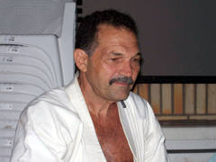
O primeiro faixa-preta formado no Rio Grande do Norte foi Franklin Fernandes Ramos, um dos primeiros alunos do Sensei Juarez. Sua trajetória representa um importante capítulo da história do karatê potiguar e demonstra a continuidade do trabalho iniciado pelo pioneiro da modalidade no estado.
Nos primeiros anos, o karatê enfrentou certa resistência, pois a luta livre era a modalidade de combate mais popular entre os praticantes potiguares. Apesar das dificuldades, a dedicação de Juarez Alves Gomes e de seus alunos permitiu que o karatê conquistasse espaço e se expandisse gradativamente.
Atualmente, o Rio Grande do Norte conta com centenas de praticantes, diversas academias, associações e federações que promovem competições, exames de graduação e eventos voltados ao desenvolvimento do Karatê-Do. O trabalho iniciado no final da década de 1960 foi fundamental para que a modalidade alcançasse o reconhecimento que possui hoje no estado.
🎥 Depoimento de Franklin Fernandes Ramos
Neste vídeo, o Sensei Franklin Fernandes Ramos relata parte de sua experiência com a chegada do karatê ao Rio Grande do Norte e compartilha suas vivências como um dos primeiros praticantes da modalidade no estado.
4.1 A evolução do karatê potiguar
Após a chegada do Sensei Juarez Alves Gomes, o karatê passou por um crescimento constante no Rio Grande do Norte. Novas academias foram surgindo, diferentes estilos passaram a ser praticados e diversas federações foram criadas para organizar eventos, exames de graduação e competições estaduais.
Esse desenvolvimento fortaleceu a modalidade no estado, mas também fez surgir a necessidade de uma maior integração entre as entidades, visando promover campeonatos mais estruturados, ampliar a participação dos atletas e incentivar o intercâmbio entre professores de diferentes estilos.
4.2 UKIRN – União de Karatê Interestilos do Rio Grande do Norte
A União de Karatê Interestilos do Rio Grande do Norte (UKIRN) nasceu com a missão de promover a união entre federações de pequeno e médio porte do estado, fortalecendo o karatê potiguar por meio da cooperação entre diferentes estilos. O principal objetivo da entidade sempre foi proporcionar melhores condições para atletas, professores e dirigentes, possibilitando a realização de competições de maior porte, cursos de capacitação, intercâmbio técnico e o crescimento conjunto das instituições filiadas.
A ideia começou a ganhar forma durante um grande aulão técnico ministrado pelo Sensei Telvane, reconhecido como um dos maiores estudiosos do karatê brasileiro. O treinamento foi dedicado ao estudo do kata Suparimpei, pertencente ao estilo Shito-Ryu, e reuniu praticantes e representantes de diversas federações do Rio Grande do Norte. Ao término do evento, o Sensei Humberto convidou os presidentes das entidades presentes para uma reunião, na qual apresentou um projeto inovador de união entre as federações. A proposta previa a organização de grandes campeonatos, com capacidade para reunir cerca de mil atletas, gerando benefícios esportivos, técnicos e financeiros para todas as instituições envolvidas.
A proposta foi muito bem recebida pelos participantes e rapidamente ganhou apoio. A partir daquele encontro, iniciou-se o processo de criação da UKIRN, que passou a representar um novo momento para o karatê potiguar, baseado na colaboração entre diferentes estilos e no fortalecimento da modalidade em todo o estado.
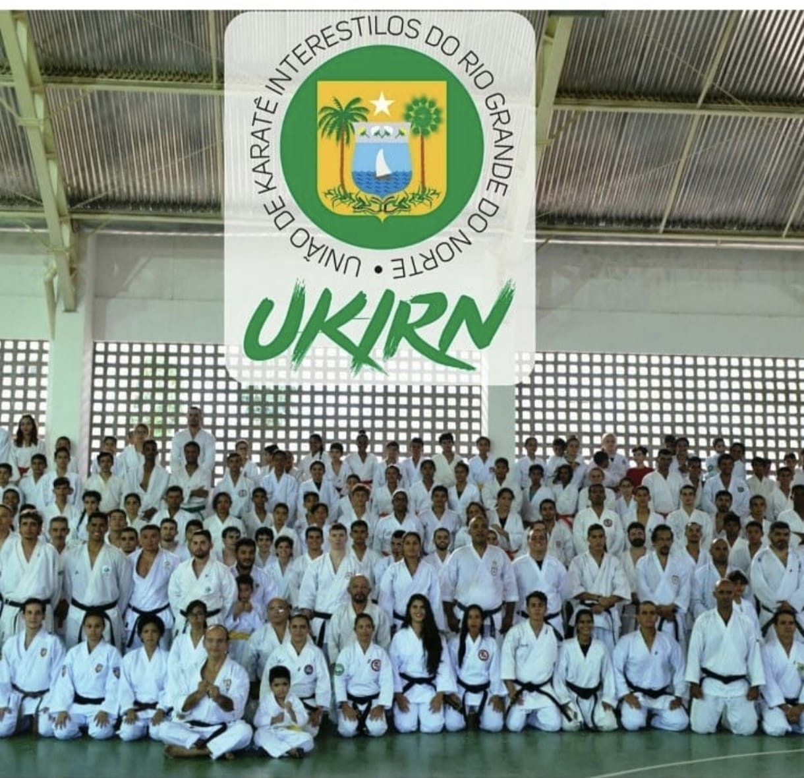
4.3 A fundação da UKIRN
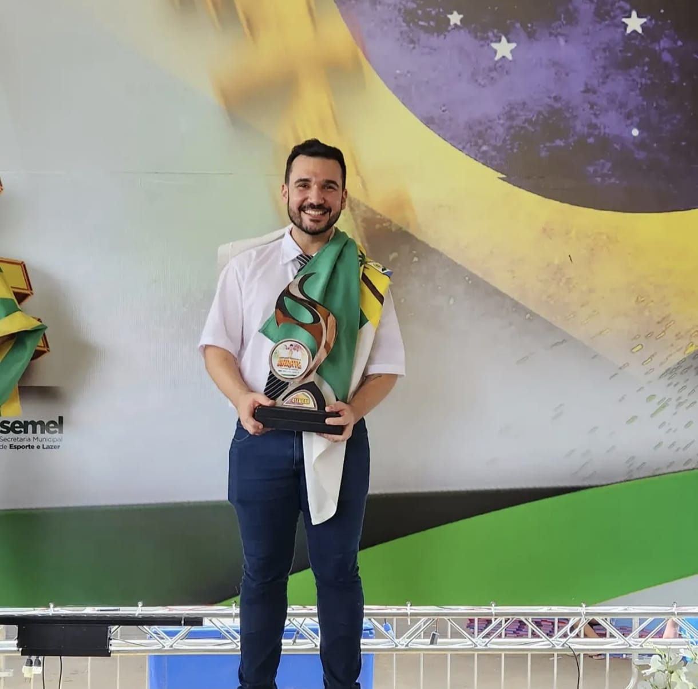
A proposta foi recebida com entusiasmo pelos representantes das federações presentes na reunião. O espírito de cooperação entre os dirigentes permitiu que o projeto fosse rapidamente estruturado, dando início a uma nova fase para o karatê do Rio Grande do Norte. A união entre diferentes entidades demonstrava que, trabalhando em conjunto, seria possível promover eventos de maior qualidade, ampliar a participação dos atletas e fortalecer a modalidade em todo o estado.
Com a criação oficial da entidade, o Sensei Telvane foi escolhido para exercer a presidência da UKIRN, enquanto o Senhor Stênio assumiu a vice-presidência. O Sensei Humberto, contador por formação, ficou responsável pela abertura do CNPJ e pela organização administrativa da instituição, contribuindo para que a nova entidade tivesse uma base sólida desde os seus primeiros passos.
A organização recebeu o nome de União de Karatê Interestilos do Rio Grande do Norte (UKIRN), denominação que representa sua principal missão: promover a integração entre os diferentes estilos de karatê existentes no estado, respeitando suas particularidades, mas trabalhando de forma unificada em prol do desenvolvimento da modalidade. Desde sua fundação, a UKIRN tem desempenhado um papel fundamental na realização de campeonatos, cursos, seminários e eventos que contribuem para o fortalecimento do karatê potiguar.
4.4 Os resultados da união
Os resultados do trabalho desenvolvido pela UKIRN apareceram rapidamente. Apenas um mês após sua fundação, a entidade já representava o Rio Grande do Norte no Campeonato Norte-Nordeste, realizado em Parauapebas, no estado do Pará. A participação em uma competição de grande porte logo nos primeiros dias de existência demonstrou a credibilidade do projeto e a união das federações em torno de um objetivo comum: fortalecer o karatê potiguar.
Com o passar dos anos, a UKIRN consolidou-se como uma das principais entidades de karatê do estado. A união entre as federações possibilitou a realização de campeonatos estaduais cada vez mais organizados e com elevado número de participantes, além da promoção de cursos técnicos, seminários, exames de graduação e eventos voltados ao aperfeiçoamento de atletas e professores.
O trabalho desenvolvido pela entidade também permitiu que o Rio Grande do Norte sediasse importantes competições do calendário nacional, como etapas da Copa do Brasil e do Campeonato Brasileiro de Karatê. Além disso, atletas vinculados às federações integrantes da UKIRN conquistaram expressivos resultados em competições estaduais, nacionais e internacionais, incluindo títulos mundiais, elevando o nome do karatê potiguar em todo o país.
Atualmente, a União de Karatê Interestilos do Rio Grande do Norte (UKIRN) é reconhecida como uma das principais responsáveis pelo crescimento e fortalecimento do karatê no estado. Seu trabalho continua promovendo a integração entre diferentes estilos, incentivando a formação de novos atletas e contribuindo para que o Rio Grande do Norte permaneça em destaque no cenário nacional da modalidade.
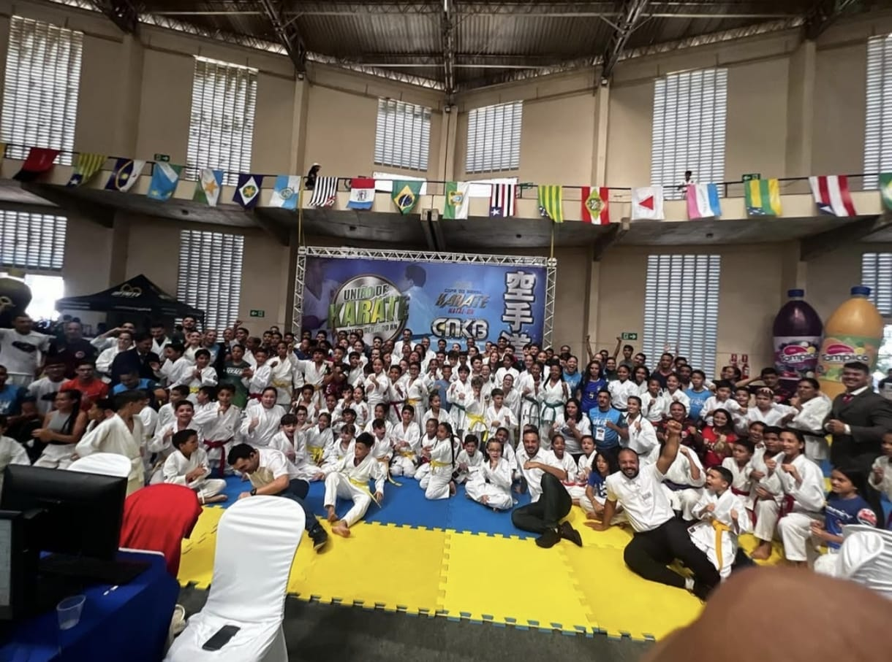
5. A Ética e a Filosofia do Karatê
O karatê vai muito além da prática de golpes e técnicas de defesa pessoal. Desde sua origem, a modalidade foi desenvolvida como um caminho para o aperfeiçoamento do ser humano, buscando formar indivíduos mais disciplinados, respeitosos e conscientes de suas responsabilidades dentro e fora do dojô.
A própria palavra Karatê-Do significa "Caminho das Mãos Vazias". O termo "Do", presente também em outras artes marciais japonesas, representa um caminho de evolução contínua, no qual o praticante procura desenvolver não apenas sua capacidade física, mas também seu caráter, sua mente e seu espírito.
Dessa forma, cada treinamento é visto como uma oportunidade de aprender valores que podem ser aplicados no cotidiano, tornando o karatê uma verdadeira filosofia de vida.
Respeito
O respeito é um dos pilares do Karatê-Do. Ele deve ser demonstrado aos mestres, colegas, adversários, familiares e a todas as pessoas, dentro e fora do dojô.
Disciplina
A disciplina é desenvolvida por meio da repetição, dedicação e compromisso. Ela permite que o praticante evolua constantemente em sua jornada.
Humildade
O verdadeiro karateca reconhece que sempre há algo novo para aprender e entende que a evolução depende da disposição para ouvir e melhorar.
Perseverança
Nenhuma conquista acontece sem esforço. O karatê ensina que a persistência diante das dificuldades é essencial para alcançar os objetivos.
Autocontrole
O praticante aprende a controlar suas emoções e utilizar seus conhecimentos apenas quando necessário, sempre com responsabilidade e equilíbrio.
Honestidade
Agir com sinceridade e integridade faz parte da formação do karateca. A honestidade fortalece a confiança e o bom convívio entre todos.
Dojo Kun
O Dojo Kun é um conjunto de princípios recitados ao final dos treinamentos em muitos dojôs. Seu objetivo é lembrar que o verdadeiro aprendizado do karatê vai além das técnicas, incentivando a formação do caráter e a aplicação desses valores na vida cotidiana.
Em japonês
- Hitotsu! Jinkaku Kansei ni Tsutomuru Koto.
- Hitotsu! Makoto no Michi o Mamoru Koto.
- Hitotsu! Doryoku no Seishin o Yashinau Koto.
- Hitotsu! Reigi o Omonzuru Koto.
- Hitotsu! Kekki no Yū o Imashimuru Koto.
Em português
- Esforçar-se para a formação do caráter.
- Ser fiel ao verdadeiro caminho da razão.
- Desenvolver o espírito de esforço.
- Respeitar acima de tudo.
- Conter o espírito de agressão.
🥋 Você sabia?
Em muitos dojôs, o Dojo Kun é recitado em japonês ao final de cada treinamento, reforçando que o Karatê-Do é um caminho para o aperfeiçoamento do caráter e não apenas uma arte de combate.
6. Os Três Pilares do Karatê
O treinamento do Karatê-Do é tradicionalmente dividido em três pilares fundamentais: Kihon, Kata e Kumite. Juntos, eles desenvolvem a técnica, o condicionamento físico, a disciplina e a capacidade de aplicar os conhecimentos adquiridos durante os treinos.
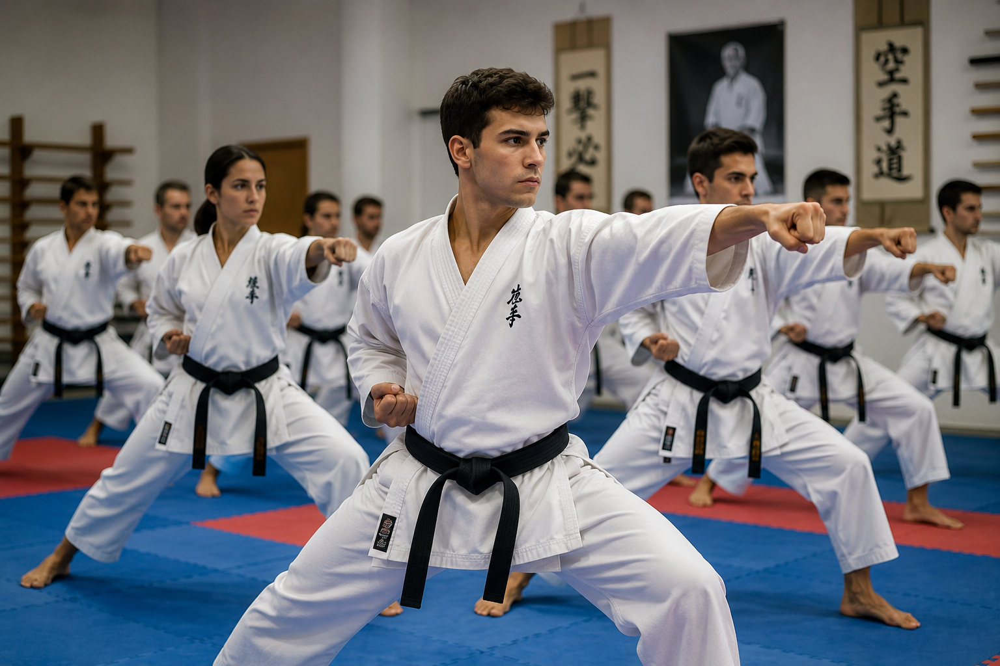
KIHON
Os fundamentos do KaratêO Kihon corresponde ao treinamento dos fundamentos básicos do karatê, como socos, chutes, bloqueios, deslocamentos e posturas. É por meio da repetição constante desses movimentos que o praticante desenvolve coordenação, equilíbrio, precisão e potência.
Todo karateca, independentemente da graduação, continua treinando kihon ao longo de sua vida, pois ele representa a base para todas as demais técnicas da modalidade.
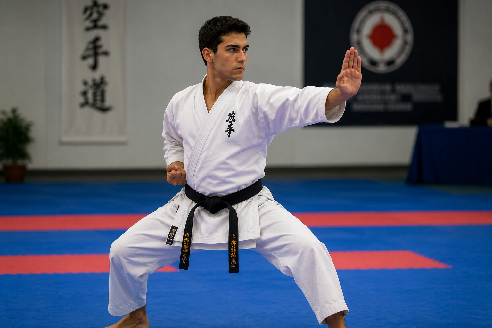
KATA
A essência do Karatê tradicionalO Kata é uma sequência de movimentos previamente estabelecida que simula situações reais de combate. Cada kata preserva técnicas transmitidas pelos antigos mestres e representa um importante patrimônio da tradição do Karatê-Do.
Além da técnica, sua prática desenvolve concentração, equilíbrio, ritmo, respiração, memória e controle corporal.
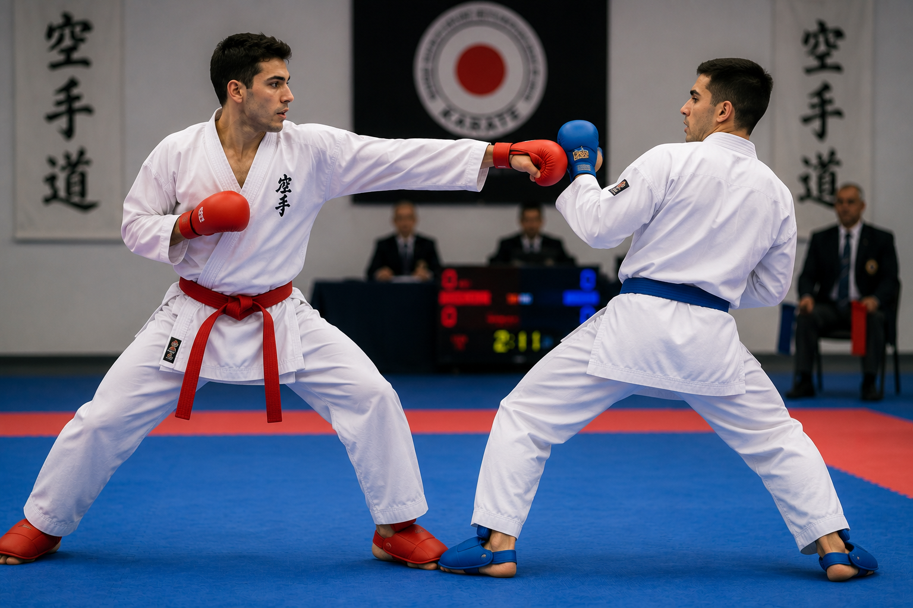
KUMITE
A aplicação prática das técnicasO Kumite consiste na aplicação das técnicas aprendidas durante os treinamentos em situações de combate controlado. Dependendo do nível dos praticantes, pode variar desde exercícios combinados até lutas esportivas.
Durante o kumite, valores como respeito, autocontrole, estratégia e espírito esportivo são tão importantes quanto a habilidade técnica.
9. O Karatê na Atualidade
Atualmente, o Karatê-Do é uma das artes marciais mais difundidas do mundo. Além de preservar suas tradições e valores filosóficos, a modalidade evoluiu como esporte, prática educativa e instrumento de inclusão social, estando presente em academias, escolas, universidades e projetos sociais em diversos países.
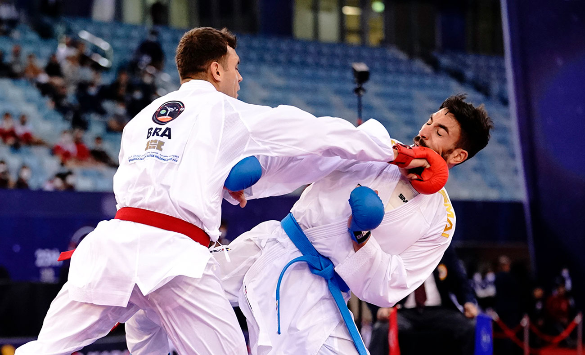
Estima-se que milhões de pessoas pratiquem karatê em todos os continentes. A modalidade é organizada por federações nacionais e internacionais que promovem competições, exames de graduação, cursos técnicos e eventos voltados ao desenvolvimento dos praticantes.
No Brasil, o karatê continua em constante crescimento, reunindo atletas de alto rendimento, professores experientes e milhares de crianças, jovens e adultos que encontram na modalidade uma ferramenta de educação, disciplina e qualidade de vida.
Expansão Mundial
O Karatê é praticado em centenas de países, reunindo milhões de praticantes de diferentes culturas e idades.
Grandes Competições
Campeonatos estaduais, nacionais, continentais e mundiais incentivam o desenvolvimento técnico e a integração entre atletas.
Qualidade de Vida
Além do condicionamento físico, o karatê desenvolve disciplina, respeito, autocontrole, concentração e equilíbrio emocional.
🥇 Karatê nos Jogos Olímpicos
Um dos maiores marcos da história recente da modalidade aconteceu com sua participação nos Jogos Olímpicos de Tóquio 2020. A estreia olímpica representou o reconhecimento internacional do Karatê-Do e ampliou ainda mais sua visibilidade em todo o mundo.
🥋 Teste seus Conhecimentos
Você chegou ao final da leitura. Agora responda ao quiz e descubra quanto aprendeu sobre o Karatê-Do.
💬 Avaliações dos Visitantes
Sua opinião é muito importante! Deixe uma avaliação sobre o site e ajude outras pessoas.
0.0
Baseado em 0 avaliações
✍️ Deixe sua avaliação
Comentários recentes
10. Referências
As informações apresentadas neste site foram obtidas por meio de livros, artigos científicos, documentos oficiais, vídeos e sites especializados sobre a história, a filosofia e o desenvolvimento do Karatê-Do.
📚 Livros
- FUNAKOSHI, Gichin. Karate-Do: Meu Modo de Vida.
- NAKAYAMA, Masatoshi. O Melhor do Karatê.
🎥 Materiais Audiovisuais
- Documentário sobre a chegada do Karatê ao Brasil.
- Depoimento do Sensei Franklin Fernandes Ramos.
- Registros históricos da UKIRN.